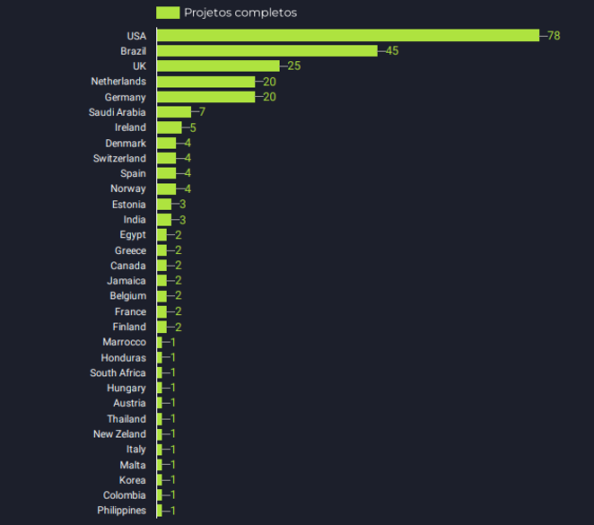

Manipulação de Dados com Pandas
Sobre o material
Esse é um material de apoio para o curso “Manipulação de Dados com Pandas” disponível na Udemy - em breve.
O curso trata sobre 8 módulos:
- Leitura de arquivos
- Métodos básicos do Pandas
- Slicing e filtros
- Métodos estatísticos
- Agregações
- Junções
- Limpeza de dados
- Visualização de dados
Sobre o autor
Analista de Dados & Editor LaTeX, auta como profissional autônomo, tendo prestado serviços a nivel nacional e internacional a clientes de mais de 30 países. Conta com mais de 200 projetos conclusos.
